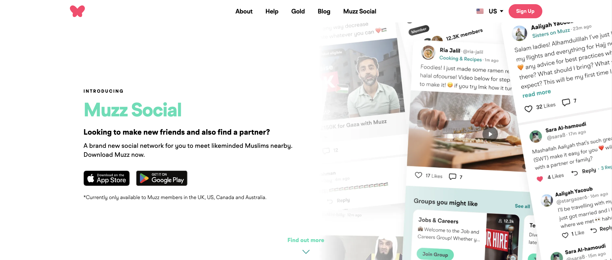

Muzz is the largest and most popular dating and marriage app for Muslims, celebrating over 7 million members and 300k successful marriages. With two funding rounds from Y-Combinator, Muzz aims to revolutionise the way Muslims meet and get married around the world.
I joined Muzz at a time where the company was in a transition period: from start up to scale up, from PHP monolith to Go microservices and from single product company to multi-product company.
When I first joined Muzz, I helped the CTO and other senior backend engineers plan the migration of key functionalities from the PHP monolith to Go microservices. I laid the foundations of core services that enabled the work of 20 other engineers, and successfully migrated analytics and blocking functionalities to Go.
The migration resulted in a massive reduction in deployment times, resources required for hosting, improved observability and on certain endpoints: request latency. This lead to a better developer experience as well as material benefits to the business and it's customers.
Muzz Social is a new product in the Muzz family, it is designed to be a social network connecting Muslims across the world. From building the backend team, to laying the architectural foundations to a lot of the actual development work; there isn't really an aspect of the social backend that I have not been involved in.
Muzz Social successfully launched to more than 1 Million members across the UK, Canada, United States and Australia, with no downtime on launch.
